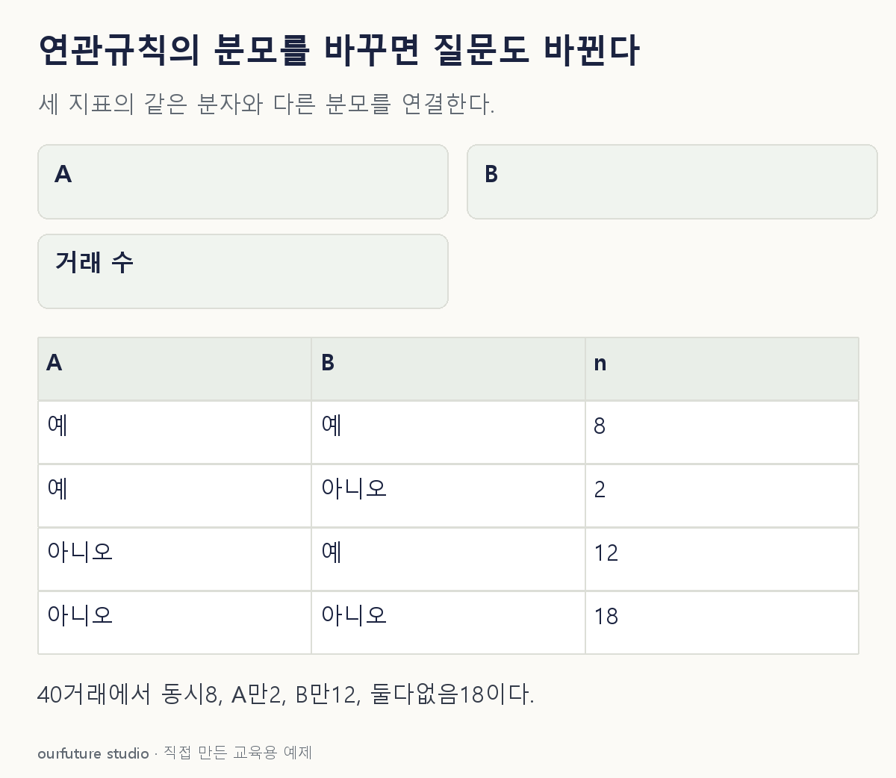

핵심 이론
지지도는 전체 거래 중 품목 묶음이 함께 나타난 비율이다. 신뢰도 A→B는 A가 있는 거래로 분모를 좁힌 뒤 그 안에서 B도 있는 비율 P(B|A)를 구한다. 거래 단위로 포함 여부를 세므로 한 영수증에서 같은 물건을 여러 개 사도 거래 수를 그만큼 늘리지 않는다.
신뢰도가 높아도 B가 원래 흔하면 A와의 특별한 연관이 크지 않을 수 있다. 향상도는 P(B|A)/P(B)로 후행 품목의 기본 비율과 비교한다. 같은 자료와 결측 없는 양의 지지도를 전제하면 P(A∩B)/[P(A)P(B)]로 쓸 수 있어 방향을 바꾸어도 향상도는 같다. 신뢰도는 분모가 달라져 일반적으로 다르다.
향상도 1.6은 독립 기준에 비해 동시 발생 비율이 1.6배라는 뜻이다. A를 홍보해 B 매출이 60% 증가한다는 인과효과는 아니다. 드문 규칙은 높은 향상도라도 표본 근거가 약할 수 있으므로 거래 수와 최소 지지도도 함께 본다. 아래는 모든 거래의 품목 포함 여부가 알려진 자체 예제다.
작은 예제로 확인하기
결측 없는 영수증 40장 중 A 10장, B 20장, 둘 다 8장이다.
| 지표 | 계산 | 값 |
|---|---|---|
| 동시 지지도 | 8/40 | 0.2 |
| A→B 신뢰도 | 8/10 | 0.8 |
| A→B 향상도 | 0.8/(20/40) | 1.6 |
지지도와 신뢰도의 분자가 같아도 분모가 다르다. 향상도는 신뢰도와 전체 B 비율을 다시 비교한다.
그림으로 확인하기

직접 고르기
거래 40장, A 10장, B 20장, 동시 8장. 결측은 없다.
A→B 향상도는?
- 1. 0.2
- 2. 0.8
- 3. 1.6
- 4. 2.0
정답과 오답의 이유 확인하기
정답 3번 — 1.6
신뢰도 8/10=0.8을 B의 기본 지지도 20/40=0.5로 나누면 1.6이다.
- 1번: 동시 지지도다.
- 2번: A→B 신뢰도이며 기본 비율과 비교하기 전이다.
- 4번: 신뢰도 계산에 동시 거래 수 8을 반영하지 않았다.
조건 하나 바꾸어 풀기
방향을 B→A로 바꾸면 신뢰도와 향상도는?
풀이: 신뢰도 0.4, 향상도 1.6.
신뢰도 8/20=0.4, A의 기본 비율 10/40=0.25이므로 0.4/0.25=1.6이다.
다시 떠올릴 단서
신뢰도 분모는 화살표 앞, 향상도는 기본 비율 비교.
근거와 적용 조건
- mlxtend Association rules — Metrics의 support·confidence·lift: 결측 없는 기본 정의. 확인일 2026-10-30.
상황·수치·보기·조건 변경은 자체 교육 예제다. 민간 복원 문항의 공식 정답이나 실제 성능·학습 효과를 뜻하지 않는다.
읽은 내용을 적용해 보기
완전 관측 이진 포함 여부, N40·A10·B20 고정이다. 판매량·인과효과로 해석하지 않는다. 체험의 큰 결과는 선택한 방향의 신뢰도이고, 문항에서 묻는 향상도는 계산 항목에서 따로 확인한다. 기본값의 신뢰도는0.8, 향상도는1.6이다.